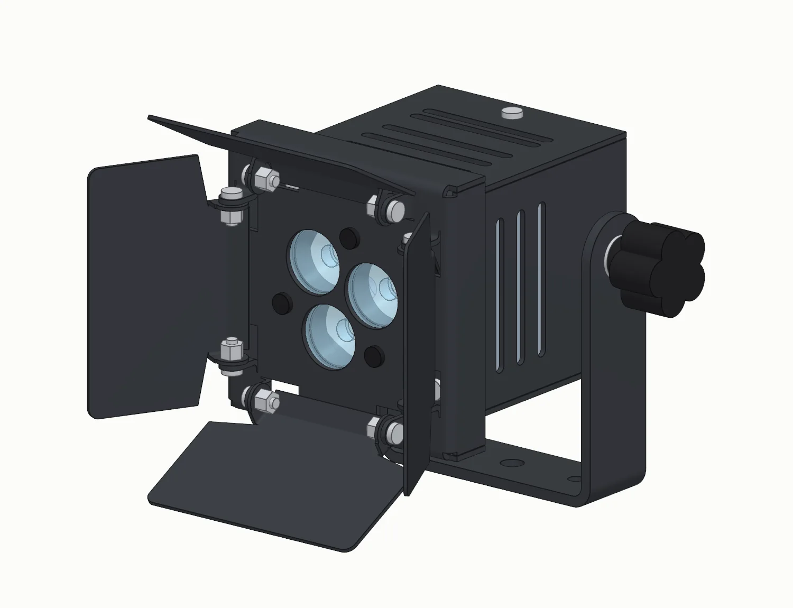
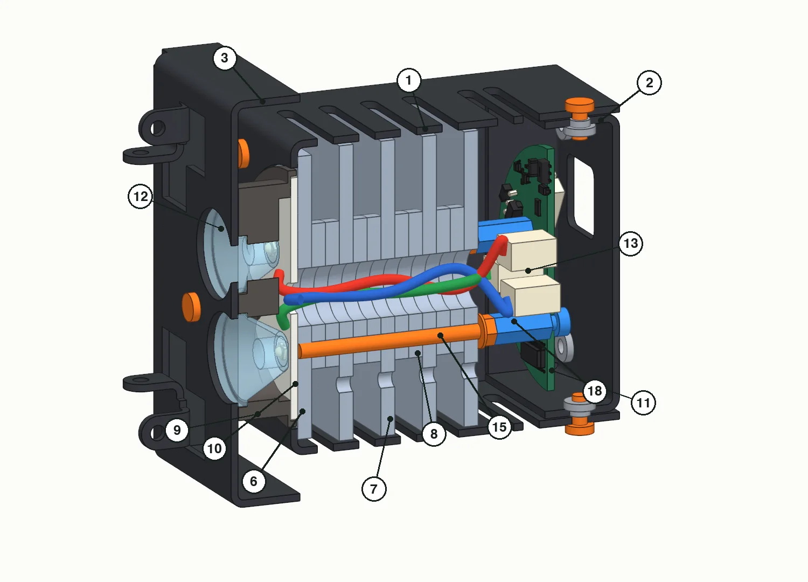
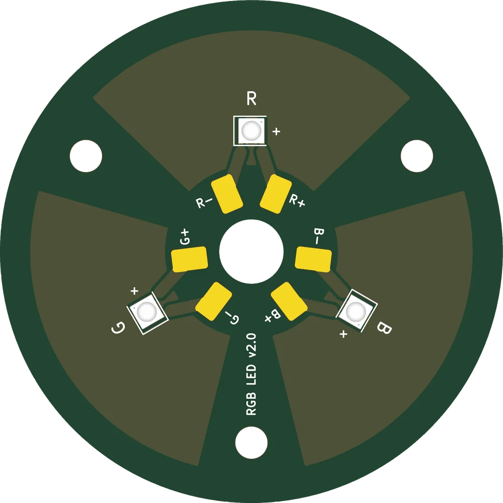
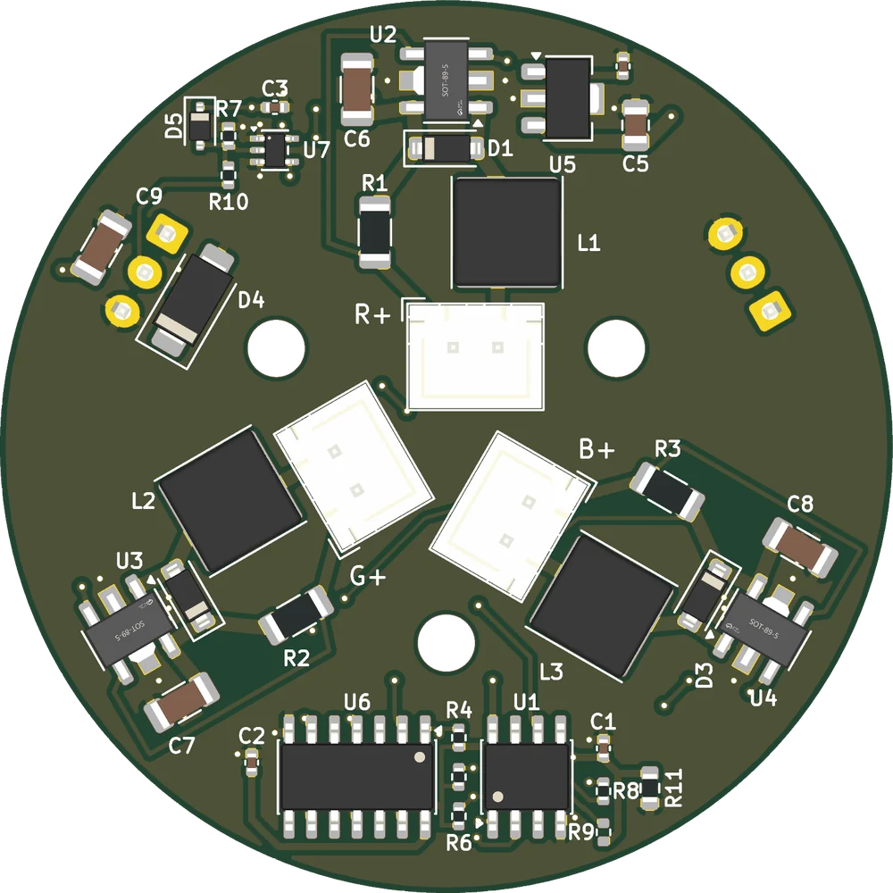
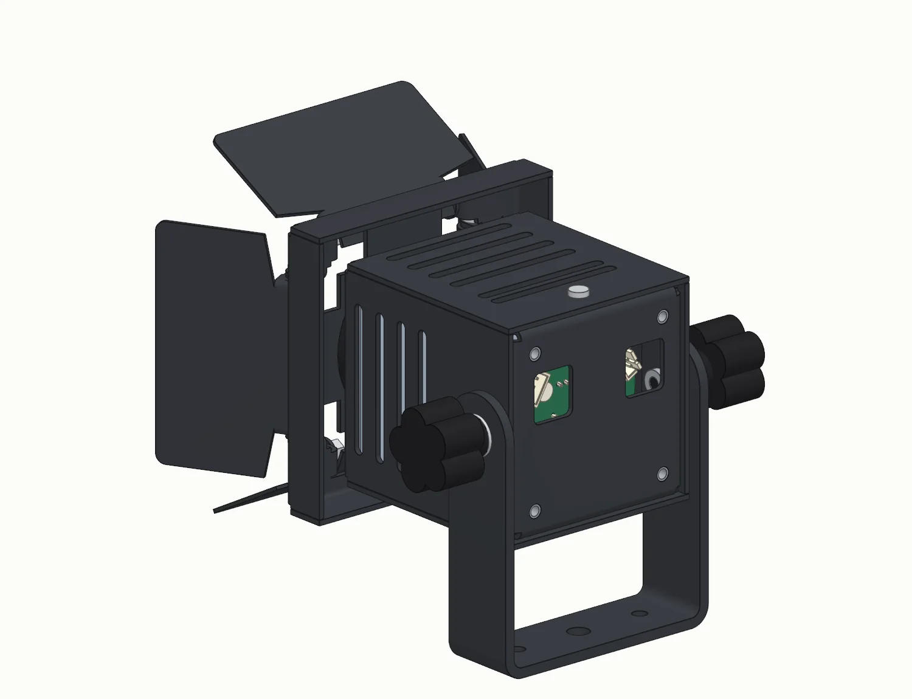

A small spotlight with three 3 W LEDs, red, green and blue, each behind its own lens. It runs on 12 V, takes its colour over one data wire, and passes power and data on to the next lamp.
Where it stands, 19 November 2026. The design is released and the parts for five lamps are being ordered. No lamp has been built yet, so the figures on this page are calculated or simulated, not measured.
The lamp from the front, drawn to its sizes. One lamp is one pixel on the data line: three levels from 0 to 255.
A square aluminium housing on a yoke, about the size of a fist. Three lenses sit behind a hood, one over each LED, and four barn doors shape the beam.

How the bands look, and how sharp the lenses draw them, is not known yet. The first order has lenses of 15°, 30° and 45°, with smooth, beaded and frosted faces, and two taller lens carriers to try the focus.
Dimming is by the pixel's own 8-bit level per colour. In simulation the brightness follows the level within 5 % above a fifth of full, and the lowest few levels are unreliable.
Two round boards, 50 mm across, with the heat path between them.



Each lamp has an input and an output with the same three pins: 12 V, data, ground. Cables go pin 1 to pin 1.
WS2811 fits the controller chip's data sheet. ESPHome needs its timing set by hand. WLED has not been checked. None of this has run on a lamp yet.
The design is made by scripts and recorded as it went: KiCad boards, a CadQuery housing, simulation and order files.